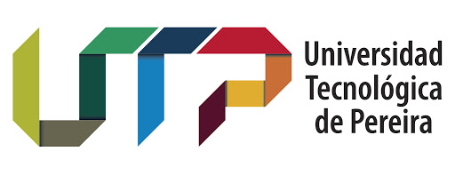
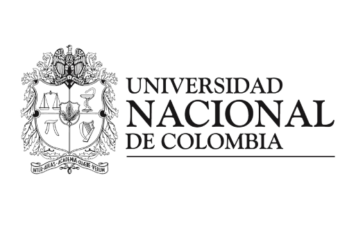
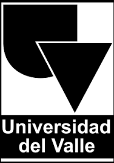

Ejercicio No. 01
Parágrafos y Listas
Código HTML
Desarrollada por: Santiago Runcería Ortiz
Código: 10.10.138.275
Fecha: 17 de Marzo de 2020
PARADIGMAS DE PROGRAMACIÓN:
Imperativo: es un paradigma de programación que describe la programación en términos del estado del programa y sentencias que cambian dicho estado.
Los programas imperativos son un conjunto de instrucciones que le indican al computador cómo realizar una tarea.
Funcional: es un paradigma de programación declarativa basado en el uso de funciones matemáticas, en contraste con la programación imperativa,
que enfatiza los cambios de estado mediante la mutación de variables.
Orientado a Objetos: es un paradigma de programación que viene a innovar la forma de obtener resultados. Los objetos manipulan los datos de entrada
para la obtención de datos de salida específicos, donde cada objeto ofrece una funcionalidad especial.
Lógica: la programación lógica es un tipo de paradigmas de programación dentro del paradigma de programación declarativa. La programación lógica gira en torno al concepto de predicado, o relación entre elementos.
UNIVERSIDADES:
- Universidad de Los Andes: la Universidad de los Andes es una universidad privada colombiana con sedes en Bogotá y Cartagena. Fue fundada en 1948 por Mario Laserna Pinzón, Francisco Pizano de Brigard, Alberto Lleras Camargo y Nicolás Gómez Dávila, con el propósito de crear una institución de educación superior laica e independiente a las corrientes políticas del país
- Universidad Nacional de Colombia: la Universidad Nacional de Colombia (UNAL) es una universidad pública colombiana del orden nacional, sujeta a inspección y vigilancia por medio de la Ley 1740 de 2014 y la ley 30 de 1992 del Ministerio de Educación de Colombia, fundada bajo el gobierno de Santos Acosta el 22 de septiembre de 1867 y regentada por la Ley 66 de 1867.1 Es la universidad más importante y representativa de Colombia por su tradición, prestigio, calidad y selectividad. Está vinculada a la historia y producción académica de América Latina.4 Su campus insignia, la Ciudad Universitaria de Bogotá, es el más grande del país y cuenta con 17 edificios declarados monumento nacional.56 Tiene sedes en Medellín, Manizales, Palmira, Arauca, Leticia, Tumaco, San Andrés y La Paz
- Universidad del Valle: la Universidad del Valle, comúnmente conocida como Univalle, es una universidad pública colombiana ubicada en el Valle del Cauca. Es la tercera mejor Universidad de Colombia después de la Universidad de los Andes de Bogotá y considerada la principal institución de educación superior del suroccidente del país, sujeta a inspección y vigilancia por medio de la Ley 1740 de 2014 y la ley 30 de 1992 del Ministerio de Educación de Colombia.
CARRERAS UNIVERSITARIAS A ESCOGER (INGENIERÍAS):
Universidad de los Andes:

- Ingeniería Ambiental
- Ingeniería Biomédica
- Ingeniería Eléctrica
- Ingeniería Electrónica
- Ingeniería Industrial
- Ingeniería Mecánica
- Ingeniería Química
- Ingeniería de Sistemas y Computación
Universidad Nacional:

- Ingeniería Agrícola
- Ingeniería Electrónica
- Ingeniería Mecatrónica
- Ingeniería Civíl
- Ingeniería Industrial
- Ingeniería Química
- Ingeniería de Sistemas y Computación
- Ingeniería Eléctica
- Ingeniería Mecánica
Universidad del Valle

- Ingeniería Agrícola
- Ingeniería de Alimentos
- Ingeniería de Materiales
- Ingeniería de Sistemas
- Ingeniería Sanitaria y Ambiental
- Ingeniería Topográfica
- Ingeniería en Alimentos
- Ingeniería Civíl